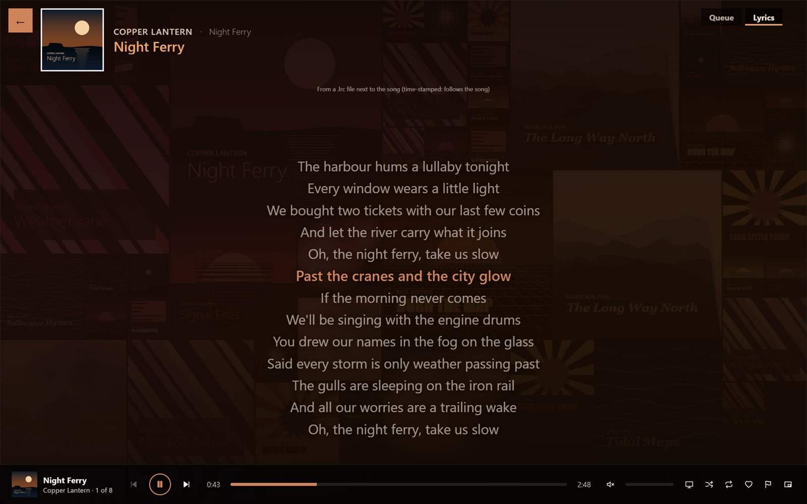
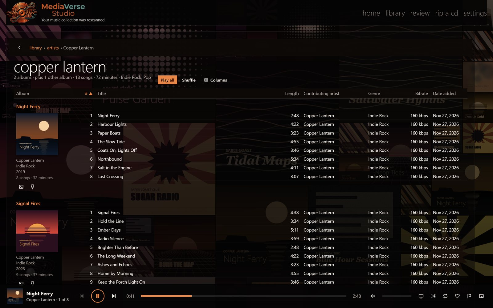
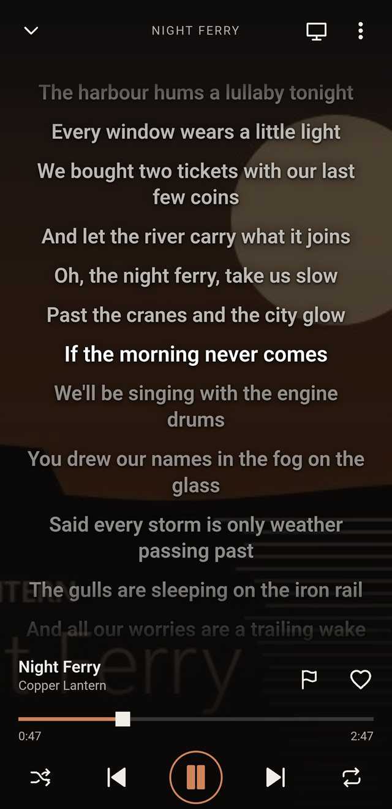
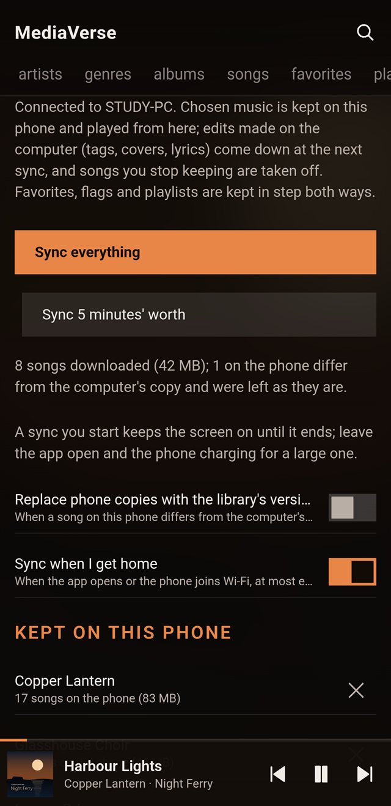

Your music,
in order, in every room.
MediaVerse Studio is free, open-source software for the music you own. It organizes your library, fixes what years of ripping and downloading left behind, and shares it with the computers, phones, TVs and speakers in your home.
Download the betaSee it on your devices
Public beta 0.9.1 · Windows 11 and Android · Samsung TVs

Organize
A library that is easy to live with
Point it at your music folder, on this computer or a network drive, and browse it like a record shelf.
- Artists, albums and playlists with your covers up front, one search box and an A to Z bar
- Playlists you drag into order, and smart playlists that follow rules you set
- Rename and refile the whole library to one naming rule: preview first, undo after
- Rip your CDs into it, checked for accuracy track by track

Fix
Put right what the years left behind
Missing years, "Track 01", blurry covers and songs with no words. You see each tag change before it is written.
- Find the real release and repair names, numbers, years and genres, with undo
- Put a properly sized cover inside every song, so it shows on every player
- Find lyrics, and let the Lyric AI on your own computer time them to the singing
- Catch clicks, dropouts and silent songs, and keep a list of discs to rip again

Share
One library for the whole house
The Windows program is all you need to share your music at home. A Jellyfin server is optional: add one and your music stays within reach when the computer is off.
organize · fix · rip · play
Phones and TVs can use the Jellyfin server directly as well. Sharing stays on your home network.
Favorites and playlists travel
Phones keep favorites, flagged songs and playlists in step both ways, with your computer or your Jellyfin server.
Flag it where you hear it
Something sounds wrong in the car or on the TV? Flag it, and it waits for you at the computer to be fixed.
New music finds its way home
An album bought on a phone can be sent to an incoming folder on your computer, ready to look over. new
Room for everyone
Each person can have their own favorites and playlists on the TV and on phones using Jellyfin. Profiles in the Windows program are next. new
Take a closer look
Screens from version 0.9.1, showing a made-up library: every artist, album, cover and lyric was invented for these pictures.
Windows PC
The full studio: rip, organize, fix, play, share and cast.
Windows in depth →


Android
Your music on the phone and in Android Auto, in step with home.
Android in depth →Smart TVs
A player made for the remote, with lyrics and a wall of covers.
TV in depth →Jellyfin
Use your own media server as the shared hub, or as the library.
Jellyfin in depth →Linux PC
The aim: the Windows program, feature for feature.
The Linux plan →Free, and your music stays yours
Free, all of it
No paid edition, adverts or account. Open source under the GPL, so it stays that way.
On your own devices
Your library lives at home. Online lookups happen for the features you use, and nothing is tracked. Privacy
Nothing locked in
Ordinary files, standard tags and playlists that other players read.
Careful with your files
Tag, cover, lyrics and renaming changes are yours to approve, and each has an undo.
Help us test it
MediaVerse Studio is a beta: it works on real computers, phones and TVs, and has not yet been used by many people. Back up your music before using the tools that change files, then tell us what you find.
Already on 0.9.0? Update every device that syncs: 0.9.1 fixes a fault that could take a song off a Jellyfin playlist.